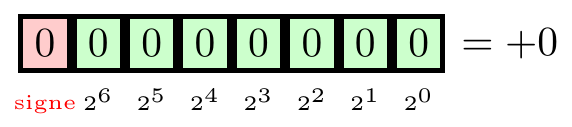
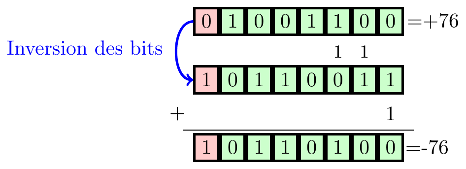

101001111 335Les machines perdent le Nord
… quand l’informatique s’emmêle les bits
Marc-André Désautels
Les erreurs de débordement
Les erreurs de débordement
- Un dépassement d’entier (integer overflow) ou erreur d’opérande est, en informatique, une condition qui se produit lorsqu’une opération mathématique produit une valeur numérique supérieure à celle représentable dans l’espace de stockage disponible.
- Par exemple, l’ajout d’une unité au plus grand nombre pouvant être représenté entraîne un dépassement d’entier.
La représentation des nombres
Système de numération
Un système de numération permet de compter des objets et de les représenter par des nombres. Un système de numération positionnel possède trois éléments :
Base \(b\) (un entier supérieur à 1)
Symboles (digits) : 0, 1, 2, …, \(b-1\)
Poids des symboles selon la position et la base, où poids=baseposition
Représentation polynomiale
Le système positionnel utilise la représentation polynomiale. Celle-ci est donnée par:
\[ \begin{aligned} (a_na_{n-1}\cdots a_1a_0,a_{-1}a_{-2}\cdots a_{-m})_b &= \sum_{k=-m}^n a_k b^k \end{aligned} \]
où \(b\) est la base et les \(a_i\) sont des coefficients (les symboles de votre système de numération).
Représentation binaire
Base = 2
Symboles ordonnés qu’on nomme les chiffres : 0, 1.
Le poids des symboles est donné par 2position
Par exemple:
\[ \begin{align} (1 \ 0100\ 1111)_2 &= 1\cdot 2^8 + 1\cdot 2^6 + 1\cdot 2^3 + 1\cdot 2^2 + \\ & \qquad + 1\cdot 2^1 + 1\cdot 2^0 \\ &= (335)_{10} \end{align} \]
Représentation binaire
- On précède le nombre par
0bsi on veut identifier un nombre sous forme binaire enPython.
Par exemple:
L’addition en binaire
0 + 0 = 0
0 + 1 = 1
1 + 0 = 1
1 + 1 = 10
avec un report de 1 à la dernière addition.
\[ \begin{array}{ccccccc} & & & \tiny{1} & & \tiny{1} & \\ & 1 & 0 & 0 & 1 & 0 & 1 \\ + & & 1 & 0 & 1 & 0 & 1 \\ \hline & 1 & 1 & 1 & 0 & 1 & 0 \\ \end{array} \]
Les trains de bits
Les ordinateurs utilisent des bits pour emmagasiner de l’information.
Un bit peut prendre la valeur 0 ou la valeur 1.
L’information est emmagasinée dans des trains de bits (\(T_n\)) de longueur \(n\) (une succession de \(n\) bits).
\(T_4 = 0110\)
Dans la majorité des langages informatiques, les trains de bits ont une longueur prédéterminée, qu’il est impossible de dépasser.
Les entiers non signés
Les entiers non signés
Entiers non signés
La représentation binaire non signée sur \(n\) bits d’un entier \(x\) est le train de bits correspondant à l’écriture de \(x\) en base 2.
Par exemple, en utilisant 8 bits:
Les entiers non signés
L’entier maximal pouvant être représenté correspond au train de bits de longueur \(n\) composé uniquement de 1.
\[ \text{Entier maximal} = \sum_{k=0}^{n-1} 1 \cdot 2^k = 2^n-1 \]
Par exemple, en utilisant 8 bits:
Les entiers non signés
| Nombre de bits | Maximum | |
|---|---|---|
uint8 |
8 | 255 |
uint16 |
16 | 65 535 |
uint32 |
32 | 4 294 967 295 |
uint64 |
64 | 18 446 744 073 709 551 615 |
Débordement
Sur 8 bits, la plus grande valeur représentable est 255.
Les nombres supérieurs à cette valeur ne peuvent tout simplement pas être représentés avec seulement 8 bits.
Pire encore, si une opération arithmétique produit une valeur supérieure à cette limite, il se produit un dépassement d’entier (en anglais integer overflow).

Python
En Python, contrairement à la plupart des langages informatiques, les entiers sont représentés avec une précision infinie. C’est-à-dire que la seule limite correspond à la mémoire interne de la machine que vous utilisez.
Par exemple, \(2^{32}\) est représenté en utilisant 32 bits et \(2^{128}\) est représenté en utilisant 44 bits.
Dans les autres langages
Cependant, dans la majorité des langages informatiques, la précision de la représentation des entiers est finie, c’est-à-dire qu’un certain nombre de bits est alloué en mémoire pour stocker votre nombre et vous ne pouvez pas le dépasser.
Pour obtenir les mêmes résultats en Python, nous utiliserons la librarie numpy qui contient des formats d’entiers à précision fixe.
Débordement pour entiers non signés
NUCLEAR GANDHI
Civilization
- Civilization est un jeu vidéo de stratégie.
- Le joueur incarne le dirigeant d’une civilisation qu’il doit mener de l’âge de pierre à la conquête spatiale.
- Le jeu peut être gagné soit en détruisant toutes les autres civilisations, soit en étant la première civilisation à atteindre Alpha Centauri.
NUCLEAR GANDHI
- Dans le jeu original, lorsque le personnage de Gandhi (normalement extrêmement pacifique) est contrôlé par l’ordinateur, ce personnage pouvait utiliser l’arme atomique lors des conflits.
- La valeur d’aggressivité de Gandhi débutait à 1 (la valeur minimale).
- Cette valeur était stockée dans un entier non signé sur 8 bits.
- Lorsqu’une civilisation atteint la démocratie, son aggressivité est réduite de 2.
- Puisque cette valeur est stockée dans un entier non signé, son aggressivité devenait égale à 255!
NUCLEAR GANDHI
NUCLEAR GANDHI
import numpy as np
aggressivite = np.array(1).astype('uint8')
democratie = np.array(2).astype('uint8')
print(aggressivite-democratie)255“It is true that Gandhi would—eventually—use nukes when India was at war, just like any civilization in the game, and at the time this did strike a lot of players as odd,”
“It’s also true that Gandhi would frequently threaten the player, because one of his primary traits was to avoid war, and deterrence through mutually assured destruction was an effective way to go about that.”
PAC-MAN
PAC-MAN
- Les niveaux sont mémorisés, à partir de 0, dans un entier non signé de 8 bits.
- Le compteur fruits est lui aussi mémorisé dans un entier non signé de 8 bits.
- Pour dessiner les fruits, on additionne 1 au niveau.
- 3 situations possibles;
- Niveau 7 ou moins;
- Niveau plus de 8;
- Niveau plus de 19.
- 3 situations possibles;
PAC-MAN
- Au niveau 256 (compteur de niveau 255), le jeu incrémente le compteur fruits.
- Le compteur fruits est maintenant égal à 0, ce qui n’était pas prévu.
- ET crois être dans la situation 7 ou moins.
- À chaque fois qu’on dessine un fruit, on enlève 1 au compteur fruits, jusqu’à ce qu’on arrive à 0.
- Le compteur fruits est maintenant égal à 255 et on dessine des fruits jusqu’à atteindre 0.

Niveau 255;
Ajoute 1 au compteur pour arriver au compteur fruits 256;
Débordement; compteur fruits 0;
Fruits; niveau moins 1; donc 255;
Dessiner 255 fruits; corruption du labyrinthe (il est prévu de dessiner au maximum 7 fruits).
Les trains en Suisse
256 essieus… non merci
Pour garder le compte des trains sur le réseau ferroviaire suisse, des détecteurs sont placés sur les rails.
Ces détecteurs comptent le nombre d’essieus de chaque train.
Ils utilisent un entier non signé sur 8 bits.
Si un train avait exactement 256 essieus, le compteur retournerait à zéro, et ce train deviendrait indétectable… un train fantôme.

Le passage précédent se traduit par “Pour éviter de faussement signaler une section de rails comme étant vide, en remettant le compteur à zéro, le nombre total d’essieus d’un train ne doit pas être égal à 256”.
Therac-25
Therac-25
Therac-25 était le nom d’une machine de radiothérapie développée conjointement par l’Énergie atomique du Canada Limitée et CGR MeV.
Entre 1985 et 1987, le Therac-25 fut impliqué dans au moins six accidents durant lesquels des patients reçurent des doses massives de radiation, parfois de l’ordre de plusieurs centaines de grays.
Au moins cinq patients décédèrent des suites de l’irradiation.
Gray (unité)
- Un gray (Gy) représente l’énergie d’un rayonnement ionisant apportant une énergie d’un joule à un milieu homogène d’une masse d’un kilogramme.
| Doses | Effets |
|---|---|
| 20 Gy | Mort instantanée |
| 10 Gy | Mort pratiquement certaine |
| 5 Gy | Dose tuant 50% des sujets exposés |
Therac-25
La machine ne possédait pas de dispositif physique pour bloquer le flux d’électrons en mode « haute énergie » si la cible n’était pas en place.
Le logiciel utilisait un fanion sur 8 bits et l’incrémentait, plutôt que d’utiliser un booléen (
TrueouFalse)Des dépassements de capacité se produisaient et engendraient la désactivation de certains tests de sécurité.
Les entiers signés
Entiers signés
Entiers signés
La représentation binaire signée sur \(n\) bits d’un entier est le train de bit où le premier bit de gauche représente le signe (positif si le bit est 0 et négatif si le bit est 1), et où les \(n-1\) bits restants représentent l’écriture de \(|x|\) en base 2.
Par exemple sur huit bits:

Entiers signés
Entiers signés
La représentation binaire signée sur \(n\) bits d’un entier est le train de bit où le premier bit de gauche représente le signe (positif si le bit est 0 et négatif si le bit est 1), et où les \(n-1\) bits restants représentent l’écriture de \(|x|\) en base 2.
Par exemple sur huit bits:
Entiers signés
\[\begin{gather} \text{Entier maximal} = 2^{n-1}-1 \\ \text{Entier minimal} = -(2^{n-1}-1) \end{gather}\]
Par exemple, en utilisant 8 bits:
Entiers signés
\[\begin{gather} \text{Entier maximal} = 2^{n-1}-1 \\ \text{Entier minimal} = -(2^{n-1}-1) \end{gather}\]
Par exemple, en utilisant 8 bits:
Entiers signés
| Nombre de bits | Minimum | Maximum | |
|---|---|---|---|
int8 |
8 | -127 | 127 |
int16 |
16 | -32 767 | 32 767 |
int32 |
32 | -2 147 483 647 | 2 147 483 647 |
int64 |
64 | -9 223 372 036 854 775 807 | 9 223 372 036 854 775 807 |
Problème… pas trop grave
- Nous avons maintenant deux zéros:
Problème… plus grave
- On brise l’addition binaire.

La bonne réponse est 52!!!
Le complément à deux
Les nombres positifs sont représentés de manière usuelle.
Les nombres négatifs sont obtenus en calculant l’opposé du nombre positif par deux opérations successives:
On inverse les bits de l’écriture binaire (les 0 deviennents des 1 et vice-versa);
On ajoute 1 au résultat (les dépassements sont ignorés).
Cette opération correspond au calcul de \(2^n-|x|\).
Le complément à deux
Le complément à deux

Débordement
- Contrairement aux entiers non signés, le débordement focntionne différemment avec les entiers signés, en raison du complément à deux.
Débordement
- Contrairement aux entiers non signés, le débordement focntionne différemment avec les entiers signés, en raison du complément à deux.
Valeur réelle Valeur non signée 125 125
126 126
127 127
128 -128
129 -127
130 -126Super Mario Bros.
Super Mario Bros
- Le nombre de vies de Mario est stocké dans un entier signé sur 8 bits.
- Un joueur peut donc avoir 127 vies.
- Sauf que le compteur devient un peu fou bien avant…
Gangnam Style
Gangnam Style
- Bien qu’on ne soit plus en 2012, les gens regardent encore le vidéoclip GangNam Style de Psy sur Youtube.
- Le code suivant permet de nous donner le nombre de visionnements, au moment où j’écris ces lignes.
Gangnam Style
- Lorsque YouTube a été développé, personne n’imaginait qu’un vidéo pourrait être regardé plus de 2 milliard de fois!
- Le nombre de visionnements était stocké dans un entier signé de 32 bits.
- Le nombre maximal représentable était donc \(2^{31}-1=2\ 147\ 483\ 647\).
Gangnam Style
- Les ingénieurs de YouTube ont vu poindre le problème.
- Le nombre de visionnements est maintenant stocké dans un entier signé de 64 bits.
- Le nombre maximal représentable devient donc \(2^{63}-1=9 \ 223\ 372\ 036\ 854 \ 775\ 807\).
- Si vous voulez avoir l’air intelligent au prochain souper…
- neuf quintillions deux cent vingt-trois quadrillions trois cent soixante-douze trillions trente-six milliards huit cent cinquante-quatre millions sept cent soixante-quinze mille huit cent sept.

Extra, Extra - Read All About It: Nearly All Binary Searches and Mergesorts are Broken
Extra, Extra - Read All About It: Nearly All Binary Searches and Mergesorts are Broken
Une erreur dans le code pour la routine
binarySearchest restée introuvable durant neuf ans.
Le bogue
public static int binarySearch(int[] a, int key) {
int low = 0;
int high = a.length - 1;
while (low <= high) {
int mid = (low + high) / 2;
int midVal = a[mid];
if (midVal < key)
low = mid + 1
else if (midVal > key)
high = mid - 1;
else
return mid; // key found
}
return -(low + 1); // key not found.
}Le bogue
Les entiers dans
Javasont codés sur 32 bits.Le bug apparaît si la somme de
lowethighest plus grande que la valeur maximum possible pour un entier dansJava, \(2^{31}-1\).La somme déborde en une valeur négative, et la valeur reste négative lorsque divisée par deux.
Le bogue peut apparaître pour des vecteurs de longueurs (en nombre d’éléments) \(2^{30}\) ou plus (environ un milliard d’éléments). De tels vecteurs étaient impensable dans les années 1980 lorsque le code a été écrit.
Le bogue
- En tentant de répliquer le bogue en
Python:
Le bogue… corrigé
public static int binarySearch(int[] a, int key) {
int low = 0;
int high = a.length - 1;
while (low <= high) {
int mid = (low + high) / 2;
int midVal = a[mid];
if (midVal < key)
low = mid + 1
else if (midVal > key)
high = mid - 1;
else
return mid; // key found
}
return -(low + 1); // key not found.
}Le bogue… corrigé
public static int binarySearch(int[] a, int key) {
int low = 0;
int high = a.length - 1;
while (low <= high) {
int mid = low + ((high - low) / 2);
int midVal = a[mid];
if (midVal < key)
low = mid + 1
else if (midVal > key)
high = mid - 1;
else
return mid; // key found
}
return -(low + 1); // key not found.
}Le bogue… corrigé
- En
Python:
Après le bug de l’an 2000
celui de l’an 2038
La représentation POSIX du temps
Le nombre de secondes écoulées depuis le 1er janvier 1970 00:00:00 UTC, hors secondes intercalaires.
Une seconde intercalaire, est un procédé employé pour ajuster le temps universel coordonné (UTC), au temps solaire.
Sur les ordinateurs fonctionnant en 32 bits, la plupart des systèmes d’exploitation concernés représentent ce nombre comme un nombre entier signé de 32 bits, ce qui limite le nombre de secondes à \(2^{31}-1\).
La représentation POSIX du temps
\(2^{31}-1\) secondes correspond à 2 147 483 647 secondes.
Ce nombre sera atteint le 19 janvier 2038 à 3 h 14 min 7 s (UTC).
La seconde suivante, représente −2 147 483 648 en complément à deux, soit plus de 2 milliards de secondes avant 1970, le 13 décembre 1901 à 20 h 45 min 52 s pour être précis.
La représentation POSIX du temps

La représentation POSIX du temps
La solution est de passer à un horodatage sur 64 bits.
Le nombre de secondes possible serait maintenant de \(2^{63}-1\), ce qui correspond à 9 223 372 036 854 775 807 secondes!
La date butoir se retrouverait le dimanche 4 décembre 292 277 026 596 après J.-C. à 15 h 30 min 8 s.
Environ 21 fois l’âge de l’univers.
GPS week number rollover
GPS week number rollover
- La date diffusée par le GPS contient le nombre de semaines depuis le 6 janvier 1980.
- Elle est stockée sur dix chiffres binaires, donc une plage de 0 à 1 023.
- Débordement de 1999.
- Perturbations mineures.
- Débordement de 2019.
- Retard d’un vol KLM et l’annulation de nombreux vols en Chine.
- Le réseau sans fil de la ville de New York s’est effondré.
- Certains téléphones portables ont connus des problèmes.
GPS week number rollover
- Débordement de 2038.
- Débordement de 2137.
- Le protocole CNAV plus récent, successeur du protocole NAV original, utilise des numéros de semaine de treize bits.
- Ça équivaut à un cycle de 8 192 semaines, soit environ 157 ans.
Désolé pour les gens souffrant d’aviophobie…

“To keep a Boeing Dreamliner flying, reboot once every 248 days.”
“… a Model 787 airplane that has been powered continuously for 248 days can lose all alternating current (AC) electrical power due to the generator control units (GCUs) simultaneously going into failsafe mode,”
“This condition is caused by a software counter internal to the GCUs that will overflow after 248 days of continuous power. We are issuing this AD to prevent loss of all AC electrical power, which could result in loss of control of the airplane.”
Boeing Dreamliner
Le temps écoulé depuis le démarrage du système est compté en centièmes de secondes.
Ce temps est stocké dans un entier signé de 32 bits.
Le nombre maximal possible est \(2^{31}-1\) centièmes de secondes.
Ça correspond à \(\frac{2^{31}-1}{100 \cdot 60 \cdot 60 \cdot 24}=\) 248.551348 jours…
Nombres à virgule (nombres décimaux)
Virgule fixe
Virgule fixe

Quelques exemples
Le format
TrueTypede fonte numérique utilise un nombre signé à virgule fixe de 32 bits, avec 26 bits pour la partie entière.Le premier
Playstationutilisait un nombre à virgule fixe de 16 bits, avec 12 bits pour la partie fractionnaire.\(\LaTeX\) utilise un nombre à virgule fixe signé de 32 bits, avec 16 bits pour la partie fractionnaire, pour calculer les positions des objets. Pour les fontes, \(\LaTeX\) utilise un nombre à virgule fixe signé de 32 bits, avec 12 bits pour la partie fractionnaire.
La bourse de Vancouver
La bourse de Vancouver
- En janvier 1982, l’index VSE de la bourse de Vancouver est initialisé à une valeur de 1 000$.
- Après 23 mois, l’index est à une valeur de 524,811$, malgré le fait que les volumes de ventes battaient des records.
- Le lundi suivant, l’indice est mystérieusement passé à une valeur de 1 098,892$.
La bourse de Vancouver
- La valeur de l’index est stocké dans nombre à virgule fixe avec 3 chiffres après la virgule.
- Les calculs se font avec 4 chiffres après la virgule, mais les décimales sont tronquées plutôt qu’arrondies.
- On fait ces calculs environ 3 000 fois durant une journée.
- Après 23 mois, la valeur réelle devait être de 1 098,892$, mais était plutôt de 524,811$.
Missiles Patriot
Missiles Patriot
Le 25 février 1991, un Scud irakien frappait les casernes de Dhahran, en Arabie saoudite, tuant 28 soldats du centre de commandement du 14e détachement de l’armée des États-Unis.
Une recherche gouvernementale a indiqué que l’interception manquée de Dharan avait été provoquée par une erreur de logiciel dans son système de coordination.
La batterie de missiles Patriot de Dharan se trouvait alors en fonction depuis plus de 100 heures or, avec le temps, des erreurs apparaissaient dans le système et décalaient la position perçue de la cible avec sa position réelle.
Missiles Patriot
Le temps était mesuré en dixièmes \(\left(\frac{1}{10}\right)\) de secondes.
Le temps était conservé dans un nombre à virgule fixe, avec 24 bits pour la partie fractionnaire.
Malheureusement, \(\frac{1}{10}\) a une représentation infinie en binaire.
\[ \frac{1}{10} = \frac{3}{32}\sum_{k=0}^{\infty} \left( \frac{1}{16} \right)^k = 0,0\ 0011\ 0011\ 0011\ 0011\ \ldots \]
Missiles Patriot
- Puisque l’entier ne peut contenir que 24 bits dans la partie fractionnaire, l’erreur à chaque dixième de seconde est donnée par:
\[ 0,0\ 0011\ 0011\ 0011\ 0011\ 0011\ 00\ldots \]
- les chiffres après les trois points.
Missiles Patriot
- Puisque l’entier ne peut contenir que 24 bits dans la partie fractionnaire, l’erreur à chaque dixième de seconde est donnée par:
Missiles Patriot
Après 100 heures, nous avons une erreur de:
\[ \frac{1}{10 \cdot 16^5} \cdot 10\cdot 100\cdot 60\cdot 60 \approx 0,342\ \text{secondes} \]
Les missiles Scud que les Patriot devaient intercepter voyageaient à une vitesse de 1 676 mètres par secondes…
Ils parcouraient donc environ 573 mètres durant le laps de temps de l’erreur.
Les Scud étaient détectés, mais les Patriot les rataient.
Virgule flottante
Représentation normalisée
- En décimal, nous avons:
\[ +13,254 = \underbrace{+}_{\text{signe}} 0,\underbrace{13254}_{\text{mantisse}} \times 10^{\overbrace{{2}}^{\text{exposant}}} \]
Représentation normalisée
- Par contre, en binaire, nous avons:
\[ +10,101 = \underbrace{+}_{\text{signe}} \overbrace{1}^{\text{toujours}\ 1},\underbrace{0101}_{\text{mantisse}} \times 2^{\overbrace{{1}}^{\text{exposant}}} \]
- Le premier 1 est implicite et n’a pas besoin d’être stocké.
La norme IEEE 754
La norme IEEE 754
- 1 bit pour le signe \(S\)
- \(e\) bits pour l’exposant \(E\) biaisé (pour trouver l’exposant réel, il faut soustraire une valeur (le biais) à celle stockée.)
- \(m\) bits pour la mantisse \(M\)
Un nombre flottant normalisé a une valeur \(N\) donnée par la formule suivante: \[ N = S \times 2^{E-\text{BIAIS}} \times \left(1+\frac{M}{2^m}\right) \]
Le format double précision
- 1 bit pour le signe \(S\)
- 11 bits pour l’exposant \(E\) biaisé (biais de 1 023)
- 52 bits pour la mantisse \(M\)
Le nombre maximum représentable est :
\[ 1,7976931348623157 × 10^{308} \]
Ariane 5
Ariane 5
- Le 4 juin 1996, la fusée Ariane 5 explose 40 secondes après son décollage.
- La fusée en était à son premier voyage et son développement avait coûté 7 milliards de dollars.
- La cause de l’échec est dûe à une erreur logicielle dans le SRI (Système de Référence Inertielle).
Ariane 5
- Durant l’étalonnage de l’appareil, on mesure les accélérations horizontales et verticales.
- Puisque la fusée est immobile, ces valeurs sont petites.
- On transfère ces mesures (des flottants codés sur 64 bits) en entiers signés codés sur 16 bits.
- Le maximum sur 64 bits : \(1,7976931348623157 × 10^{308}\).
- Le maximum sur 16 bits : \(32\ 767\).
Ariane 5
- Pour ne pas saturer la mesure de l’accélération verticale au décollage, le logiciel effectue un écrêtage de sa représentation entière à -32 768 et +32 767 (extremums pour 16 bits).
- Mais cette précaution n’a pas été prise pour l’accélération horizontale car le risque de saturation n’était pas identifié pour Ariane 4.
- Malheureusement, il se produit avec Ariane 5, plus puissante et qui génère des accélérations de vol plus élevées.
- Faute de protection, un signal d’erreur a donc été envoyé.
desautm.github.io/math-catastrophe